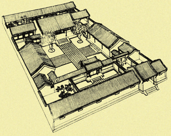
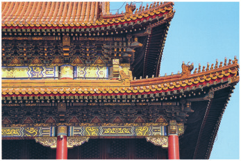
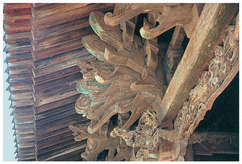
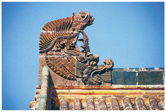

教材文本 · 实用类文本阅读
中国建筑的特征
建筑传统包含可辨认的构件和组织规则；理解其结构与创造原则，有助于在新材料、新需要下开展传承与创新。
导读
文体与题材：建筑学说明文章；体系特征与文化传承。
作者简介：梁思成（1901—1972），建筑学家，长期研究中国建筑史，著有《中国建筑史》《清式营造则例》等。本文发表于1954年《建筑学报》。
文本出处：选自《建筑学报》1954年第1期。 本册第55—60页。
内容脉络：文章先界定中国建筑体系的历史与分布，继而列出九项基本特征，从形体、群体布局进入结构、屋顶和装饰；随后以语言的词汇、文法说明建筑构件与组合规则，再以跨文化实例提出可译性，最后回到新建筑如何继承传统的问题。
内容主旨：建筑传统包含可辨认的构件和组织规则；理解其结构与创造原则，有助于在新材料、新需要下开展传承与创新。
阅读重点：辨明分类层次；分析语言类比所揭示的关系及其限度；将插图与相应结构说明配合阅读。
原文
原文按结构分节；随文内容可定位至对应段落。
总说：中国建筑形成了延续数千年、分布广泛的独特体系。
中国的建筑体系是在世界各民族数千年文化史中一个独特的建筑体系。它是中华民族数千年来世代经验的累积所创造的。这个体系分布到很广大的地区：西起葱岭，东至日本、朝鲜，南至越南、缅甸，北至黑龙江，包括蒙古人民共和国的区域在内。这些地区的建筑和中国中心地区的建筑，或是同属于一个体系，或是大同小异，如弟兄之同属于一家的关系。
考古学家所发掘的殷代遗址证明，至迟在公元前15世纪，这个独特的体系已经基本上形成了，它的基本特征一直保留到了近代。3500年来，中国世世代代的劳动人民发展了这个体系的特长，不断地在技术上和艺术上把它提高，使之达到了高度水平，取得了辉煌成就。
中国建筑的基本特征可以概括为下列九点。
分述：作者从单体、布局、结构和装饰等方面说明九项建筑特征。
（二）在平面布置上，中国所称的一“所”房子是由若干座这种建筑物以及一些联系性的建筑物，如回廊、抱厦、厢、耳、过厅等等，围绕着一个或若干个庭院或天井建造而成的。在这种布置中，往往左右均齐对称，构成显著的轴线。这同一原则，也常应用在城市规划上。主要的房屋一般地都采取向南的方向，以取得最多的阳光。这样的庭院或天井里虽然往往也种植树木花草，但主要部分一般地都有砖石墁地，成为日常生活所常用的一种户外的空间，我们也可以说它是很好的“户外起居室”。

（三）这个体系以木材结构为它的主要结构方法。这就是说，房身部分是以木材做立柱和横梁，成为一副梁架。每一副梁架有两根立柱和两层以上的横梁。每两副梁架之间用枋、檩之类的横木把它们互相牵搭起来，就成了“间”的主要构架，以承托上面的重量。
两柱之间也常用墙壁，但墙壁并不负重，只是像“帷幕”一样，用以隔断内外，或划分内部空间而已。因此，门窗的位置和处理都极自由，由全部用墙壁至全部开门窗，乃至既没有墙壁也没有门窗（如凉亭），都不妨碍负重的问题；房顶或上层楼板的重量总是由柱承担的。这种框架结构的原则直到现代的钢筋混凝土构架或钢骨架的结构才被应用，而我们中国建筑在3000多年前就具备了这个优点，并且恰好为中国将来的新建筑在使用新的材料与技术的问题上准备了极有利的条件。

（四）斗拱：在一副梁架上，在立柱和横梁交接处，在柱头上加上一层层逐渐挑出的称作“拱”的弓形短木，两层拱之间用称作“斗”的斗形方木块垫着。这种用拱和斗综合构成的单位叫作“斗拱”。它是用以减少立柱和横梁交接处的剪力，以减少梁的折断之可能的。更早，它还是用以加固两条横木接榫的，先是用一个斗，上加一块略似拱形的“替木”。斗拱也可以由柱头挑出去承托上面其他结构，最显著的如屋檐，上层楼外的“平坐”（露台），屋子内部的楼井、栏杆等。斗拱的装饰性很早就被发现，不但在木构上得到了巨大的发展，并且在砖石建筑上也充分应用。它成为中国建筑中最显著的特征之一。
（五）举折，举架：梁架上的梁是多层的，上一层总比下一层短，两层之间的矮柱（或柁墩）总是逐渐加高的。这叫作“举架”。屋顶的坡度就随着这举架，由下段的檐部缓和的坡度逐步增高为近屋脊处的陡斜，成了缓和的弯曲面。
（六）屋顶在中国建筑中素来占着极其重要的位置。它的瓦面是弯曲的，已如上面所说。当屋顶是四面坡的时候，屋顶的四角也就是翘起的。它的壮丽的装饰性也很早就被发现而予以利用了。在其他体系建筑中，屋顶素来是不受重视的部分，除掉穹隆顶得到特别处理之外，一般坡顶都是草草处理，生硬无趣，甚至用女儿墙把它隐藏起来。但在中国，古代智慧的匠师们很早就发挥了屋顶部分的巨大的装饰性。在《诗经》里就有“如鸟斯革，如翚斯飞”的句子来歌颂像翼舒展的屋顶和出檐。《诗经》开了端，两汉以来许多诗词歌赋中就有更多叙述屋子顶部和它的各种装饰的词句。这证明屋顶不但是几千年来广大人民所喜闻乐见的，并且是我们民族所最骄傲的成就。它的发展成为中国建筑中最主要的特征之一。
（七）大胆地用朱红作为大建筑物屋身的主要颜色，用在柱、门窗和墙壁上，并且用彩色绘画图案来装饰木构架的上部结构，如额枋、梁架、柱头和斗拱，无论外部内部都如此。在使用颜色上，中国建筑是世界各建筑体系中最大胆的。
（八）在木结构建筑中，所有构件交接的部分都大半露出，在它们外表形状上稍稍加工，使成为建筑本身的装饰部分。例如：梁头做成“桃尖梁头”或“蚂蚱头”；额枋出头做成“霸王拳”；昂的下端做成“昂嘴”，上端做成“六分头”或“菊花头”；将几层昂的上段固定在一起的横木做成“三福云”；等等。或如整组的斗拱和门窗上的刻花图案、门环、角叶，乃至如屋脊、脊吻、瓦当等都属于这一类。它们都是结构部分，经过这样的加工而取得了高度的装饰效果。

（九）在建筑材料中，大量使用有色琉璃砖瓦，尽量利用各色油漆的装饰潜力。木上刻花，石面上作装饰浮雕，砖墙上也加雕刻。这些也都是中国建筑体系的特征。
注释 · 批注 14
个别
个别〔个别〕单个，单独。（教材第55页注释。）
抱厦
抱厦〔抱厦〕房屋前面加出的门廊，也指后面毗连着的小房子。（教材第55页注释。）
厢
厢〔厢〕厢房，在正房前面两旁的房屋。（教材第55页注释。）
耳
耳〔耳〕耳房，跟正房相连的两侧的小房屋，也指厢房两旁的小屋。（教材第55页注释。）
墁
墁〔墁（màn）〕用砖、石等铺地面。（教材第56页注释。）
限定结构类型
墙壁并不负重本段讨论木构梁架体系内墙壁的作用。概括时须保留这个前提，不能推广为所有时代、所有中国建筑的墙体一律不承重。
替木
替木〔替木〕斗拱上用以承托梁枋的短木。（教材第56页注释。）
如鸟斯革，如翚斯飞
如鸟斯革，如翚斯飞〔如鸟斯革，如翚（huī）斯飞〕语出《诗经·小雅·斯干》。意思是屋宇高扬如同鸟翅，屋檐华美上翘，如同五彩野鸡展翅高飞。斯，语气助词。革，翅膀。翚，羽毛具五彩的野鸡。（教材第57页注释。）
额枋
额枋〔额枋〕檐柱之间的联系梁，用以承托其上的斗拱。（教材第57页注释。）
桃尖梁头
桃尖梁头〔桃尖梁头〕桃尖梁尖状的端头。桃尖梁，檐柱等与金柱间的联系梁。（教材第57页注释。）
蚂蚱头
蚂蚱头〔蚂蚱头〕与下文的“霸王拳”“六分头”“菊花头”“三福云”等都是斗拱的一些部件（如昂）的端头雕饰名称。（教材第57页注释。）
昂
昂〔昂〕斗拱中斜置的构件，起斜撑或杠杆作用，有“下昂”“上昂”之分，两层昂称“重昂”。（教材第57页注释。）
脊吻
脊吻〔脊吻〕屋脊两端的一种装饰构件，往往做成鸟兽张嘴咬住屋脊的模样，故称“吻”。（教材第57页注释。）
瓦当
瓦当〔瓦当〕筒瓦的头部，上面多有装饰性的文字、图案。（教材第57页注释。）
归纳：作者借“文法”和“词汇”解释建筑构件的组合规则。
这一切特点都有一定的风格和手法，为匠师们所遵守，为人民所承认，我们可以叫它作中国建筑的“文法”。建筑和语言文字一样，一个民族总是创造出他们世世代代所喜爱，因而沿用的惯例，成了法式。在西方，希腊、罗马体系创造了它们的“五种典范”，成为它们建筑的方式。中国建筑怎样砍割并组织木材成为梁架，成为斗拱，成为一“间”，成为个别建筑物的框架；怎样用举架的公式求得屋顶的曲面和曲线轮廓；怎样结束瓦顶；怎样求得台基、台阶、栏杆的比例；怎样切削生硬的结构部分，使之同时成为柔和的、曲面的、图案型的装饰物；怎样布置并联系各种不同的个别建筑，组成庭院：这都是我们建筑上两三千年沿用并发展下来的惯例法式。无论每种具体的实物怎样地千变万化，它们都遵循着那些法式。构件与构件之间，构件和它们的加工处理装饰之间，个别建筑物和个别建筑物之间，都有一定的处理方法和相互关系，所以我们说它是一种建筑上的“文法”。至如梁、柱、枋、檩、门、窗、墙、瓦、槛、阶、栏杆、隔扇、斗拱、正脊、垂脊、正吻、戗兽、正房、厢房、游廊、庭院、夹道等等，那就是我们建筑上的“词汇”，是构成一座或一组建筑的不可少的构件和因素。

这种“文法”有一定的拘束性，但同时也有极大的运用的灵活性，能有多样性的表现。也如同做文章一样，在文法的拘束性之下，仍可以有许多体裁，有多样性的创作，如文章之有诗、词、歌、赋、论著、散文、小说等等。建筑的“文章”也可因不同的命题，有“大文章”或“小品”。“大文章”如宫殿、庙宇等等，“小品”如山亭、水榭、一轩、一楼。文字上有一面横额，一副对子，纯粹做点缀装饰用的。建筑也有类似的东西，如在路的尽头的一座影壁，或横跨街中心的几座牌楼等等。它们之所以都是中国建筑，具有共同的中国建筑的特性和特色，就是因为它们都是用中国建筑的“词汇”，遵循着中国建筑的“文法”所组织起来的。运用这“文法”的规则，为了不同的需要，可以用极不相同的“词汇”构成极不相同的体形，表达极不相同的情感，解决极不相同的问题，创造极不相同的类型。
这种“词汇”和“文法”到底是什么呢？归根说来，它们是从世世代代的劳动人民在长期建筑活动的实践中所累积的经验中提炼出来的，经过千百年的考验，而普遍地受到承认而遵守的规则和惯例。它们是智慧的结晶，是劳动和创造成果的总结。它们不是一人一时的创作，而是整个民族和地方的物质和精神条件下的产物。
由这“文法”和“词汇”组织而成的这种建筑形式，既经广大人民所接受，为他们所承认、所喜爱，虽然原先是从木材结构产生的，但它们很快地就越过材料的限制，同样运用到砖石建筑上去，以表现那些建筑物的性质，表达所要表达的情感。这说明为什么在中国无数的建筑上都常常应用原来用在木材结构上的“词汇”和“文法”。这条发展的途径，中国建筑和欧洲希腊、罗马的古典建筑体系，乃至埃及和两河流域的建筑体系是完全一样的，所不同者，是那些体系很早就舍弃了木材而完全代以砖石为主要材料。在中国，则因很早就创造了先进的科学的梁架结构法，把它发展到高度的艺术和技术水平，所以虽然也发展了砖石建筑，但木框架同时也被采用为主要结构方法。这样的框架实在为我们的新建筑的发展创造了无比有利的条件。
注释 · 批注 9
五种典范
五种典范〔五种典范〕这里指希腊、罗马建筑体系中的五种常见柱式，分别是塔斯干、多立克、爱奥尼、科林斯和混合式。（教材第58页注释。）
结束
结束〔结束〕这里是“收束”的意思。（教材第58页注释。）
隔扇
隔扇〔隔扇〕也称“格扇”“长窗”，用木制成的柱与柱之间的隔断窗，周围有框架，中间划分为花心、绦环板、裙板等。（教材第58页注释。）
正脊
正脊〔正脊〕屋顶前后两斜坡相交而成的脊，位于屋顶最高处。（教材第58页注释。）
垂脊
垂脊〔垂脊〕也称“斜脊”，与正脊相交，沿屋面坡度向下的脊。（教材第58页注释。）
正吻
正吻〔正吻〕正脊上的鸟兽形装饰构件。（教材第58页注释。）
戗兽
戗兽〔戗（qiàng）兽〕戗脊上的兽形装饰构件。戗脊，支撑垂脊的斜向或檐角屋脊。（教材第58页注释。）
从构件转向关系
建筑上的“文法”类比的重点是构件如何组合以及惯例怎样限制并支持变化。“文法”是解释建筑的借用概念，不是说房屋真的遵守自然语言语法。
两河流域
两河流域〔两河流域〕指西亚底格里斯河与幼发拉底河流域，特别是其中下游地区。两河流域是人类文明的发祥地之一。（教材第59页注释。）
推展：作者由建筑的“可译性”论及传统建筑的研究与创新。
如同语言和文学一样，为了同样的需要，为了解决同样的问题，乃至为了表达同样的情感，不同的民族，在不同的时代是可以各自用自己的“词汇”和“文法”来处理它们的。简单的如台基、栏杆、台阶等等，所要解决的问题基本上是相同的，但许多民族创造了许多形式不同的台基、栏杆和台阶。例如热河普陀拉的一个窗子，就与无数文艺复兴时代的窗子“内容”完全相同，但是各用不同的“词汇”和“文法”，用自己的形式把这样一句“话”说出来了。又如天坛皇穹宇与罗马的布拉曼提所设计的圆亭子，虽然大小不同，基本上是同一体裁的“文章”。又如罗马的凯旋门与北京的琉璃牌楼，罗马的一些纪念柱与我们的华表，都是同一性质、同样处理的市容点缀。这许多例子说明各民族各有自己不同的建筑手法，建造出来各种各类的建筑物，就如同不同的民族使用不同的文字所写出来的文学作品和通俗文章一样。
注释 · 札记 7
共同问题与不同形式
“可译性”比较牌楼与凯旋门时，应说明作者选择的是城市纪念、点缀等功能关系。功能可比不等于历史背景、形式和意义完全相同。
热河普陀拉
热河普陀拉〔热河普陀拉〕指河北承德避暑山庄北部的普陀宗乘之庙，因仿拉萨布达拉宫而建，俗称“小布达拉宫”，是承德“外八庙”中规模最大的一座庙宇。热河，旧省名，辖今河北东北部、辽宁西部及内蒙古赤峰等地，1928年正式设立，省会承德，1955年撤销。（教材第59页注释。）
天坛皇穹宇
天坛皇穹宇〔天坛皇穹宇〕原名“泰神殿”，位于北京天坛圜（yuán）丘坛北面，为圆形攒尖顶建筑，用于平日收藏、供奉祭天大典所用的神牌。（教材第59页注释。）
布拉曼提
布拉曼提〔布拉曼提（1444—1514）〕现在译作“布拉曼特”。意大利建筑师和画家。善于在圆形的古典柱廊上置小圆顶，曾参与意大利一些重要建筑的设计。（教材第59页注释。）
凯旋门
凯旋门〔凯旋门〕古罗马统治者及后来欧洲的封建帝王为炫耀对外战争功绩而建的一种纪念性建筑，用石头砌成，形似门楼，有一个或三个拱形门洞。（教材第59页注释。）
李明仲
李明仲〔李明仲〕即李诫（？—1110），字明仲，郑州（今属河南）人，北宋建筑家。曾任主管营造工程的将作少监、将作监，主持了当时许多重大工程的建设工作。所著《营造法式》一书，是我国古代较完备的建筑学专著之一。（教材第60页注释。）
中国营造学社
中国营造学社〔中国营造学社〕研究中国古建筑的学术团体，1930年在北平（今北京）成立，抗战时期南迁至昆明，后又迁往四川李庄。梁思成曾任学社法式组主任。这个学社用文献考证和实地调查相结合的方法，对中国古建筑进行了调查研究，整理出版了一些古代建筑著作。（教材第60页注释。）
研读题
以下为依据课文设计的研读题；教材单元任务另见单元研习。每题下附讨论参考及可回溯的原文证据，不作为统一评分细则。
第1题 · 说明结构
九项特征与后面的“词汇”“文法”是什么关系？
参考答案1展开 / 收起
参考作答
九项特征提供形体、结构和装饰等具体材料；“词汇”概括构件与要素，“文法”概括构件之间及建筑之间的组织规则。
后文在前面分述基础上提炼体系形成共同风格又能变化的原因。
审题与考查点
本题考查说明结构。以原文的词句及其关系为依据，解释判断的形成过程。
文本分析
具体特征使抽象概括有对象查看证据 ↗
立柱横梁、斗拱、屋顶、色彩等分述，使读者先掌握可辨认的构造。仅说传统风格独特不足以解释体系；这些材料为后来讨论构件与关系奠定基础。
规则概括解释一致与变化查看证据 ↗
“一定的处理方法和相互关系”把零散特征组织为系统；同时承认规则具有灵活性，解释不同建筑为何既相似又各异。
知识点
解题方法
按对象、构件、关系三个层次重组信息，检验概括是否能解释具体例子。
易误辨析
“文法”不等于装饰图案，也不等于每座建筑必须使用全部相同构件。
答案组织与检核
检查引文是否准确，推理是否与引文相接，分点是否分别回答题意；不同解释须说明依据与适用范围。
第2题 · 类比作用
“可译性”的说法如何服务于文章末尾的主张？
参考答案2展开 / 收起
参考作答
它说明不同文化可以用不同形式回应相似的功能或表达需要，使建筑传统被理解为可运用的资源；由此引出熟悉本民族构件和规则、面向当代需要创新的主张，而非照搬旧建筑。
审题与考查点
本题考查类比作用。以原文的词句及其关系为依据，解释判断的形成过程。
文本分析
以功能关系建立比较查看证据 ↗
同样需要、问题和情感构成比较前提，各民族有不同词汇和文法则保留形式差异。类比因此同时揭示共同任务和不同实现方式。
从理解规则转向当代创造查看证据 ↗
结尾强调“适合于今天”，要求研究传统以产生新的建筑文章。熟悉规则是创造资源，不能把它等同于复制现成外观。
知识点
解题方法
分别写出类比的共同点、差异和由此引出的实践主张。
易误辨析
文中的比较是一种概括性解释，不能据此抹平被比较建筑的具体用途和文化差异。
答案组织与检核
检查引文是否准确，推理是否与引文相接，分点是否分别回答题意；不同解释须说明依据与适用范围。
评议
文章把形态观察与体系解释结合起来。研读应尊重其1954年的写作语境，同时辨明解释性的类比与严格建筑史结论的差别；“传统”在文中包含规则和创造经验，并非不变的外观。
参考文献
- 选自《建筑学报》1954年第1期。
- 教育部组织编写：《普通高中教科书·语文·必修下册》，人民教育出版社。本篇见第55—60页。
- 教材原文与教材注释分别保存；批注、札记、研读题及评议为编者据文本编写。
本文关联
引用本文
类比论证4 处
阅读条目 →中国建筑的特征 · 类比作用 ↗研习任务：“可译性”的说法如何服务于文章末尾的主张？
中国建筑的特征 · 类比作用 ↗文本依据：“为了同样的需要，为了解决同样的问题”；“各自用自己的“词汇”和“文法”来处理它们”。
中国建筑的特征 · 类比作用 ↗文本依据：“建造适合于今天我们新中国的建筑”；“必须首先熟悉自己建筑上的“文法”和“词汇””。
中国建筑的特征 · 类比作用 ↗查看完整解析与全部证据
概念的内涵与外延4 处
阅读条目 →中国建筑的特征 · 说明结构 ↗研习任务：九项特征与后面的“词汇”“文法”是什么关系？
中国建筑的特征 · 说明结构 ↗文本依据：“房身部分是以木材做立柱和横梁”；“这种用拱和斗综合构成的单位叫作“斗拱””。
中国建筑的特征 · 说明结构 ↗文本依据：“都有一定的处理方法和相互关系”；“有一定的拘束性，但同时也有极大的运用的灵活性”。
中国建筑的特征 · 说明结构 ↗查看完整解析与全部证据
概念的情境迁移4 处
阅读条目 →中国建筑的特征 · 类比作用 ↗研习任务：“可译性”的说法如何服务于文章末尾的主张？
中国建筑的特征 · 类比作用 ↗文本依据：“为了同样的需要，为了解决同样的问题”；“各自用自己的“词汇”和“文法”来处理它们”。
中国建筑的特征 · 类比作用 ↗文本依据：“建造适合于今天我们新中国的建筑”；“必须首先熟悉自己建筑上的“文法”和“词汇””。
中国建筑的特征 · 类比作用 ↗查看完整解析与全部证据